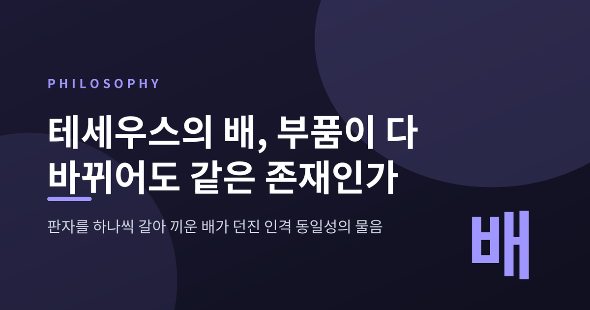
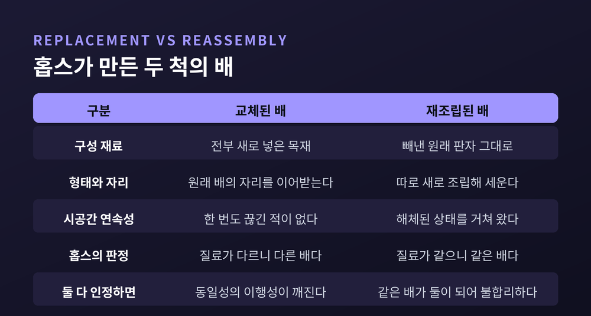
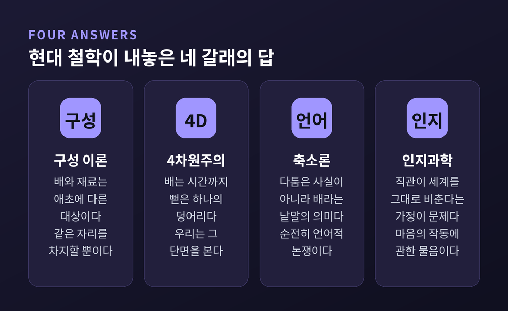
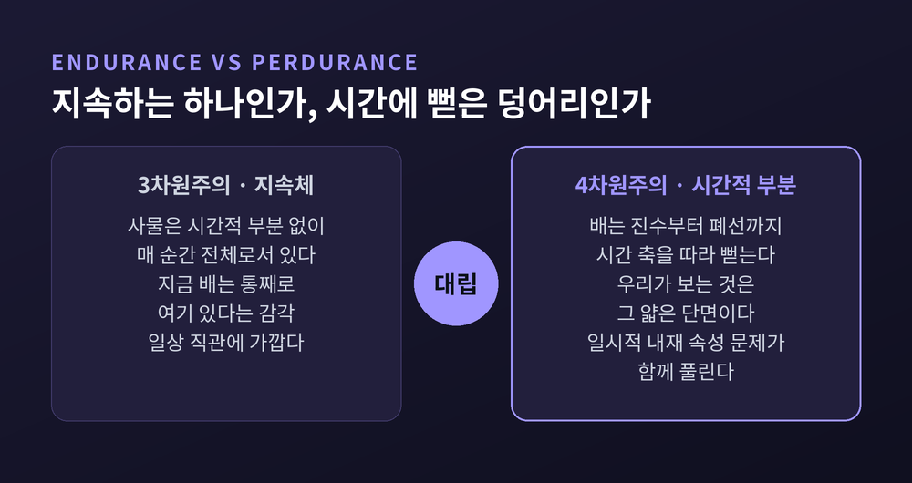
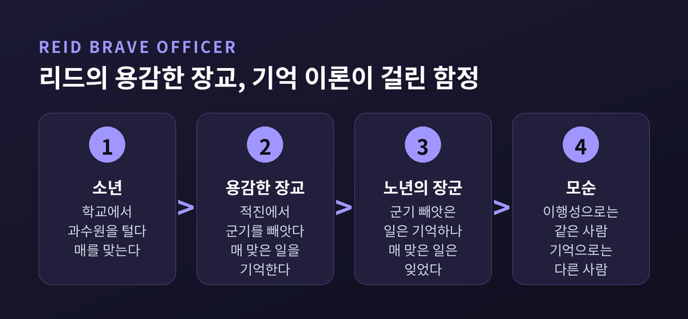
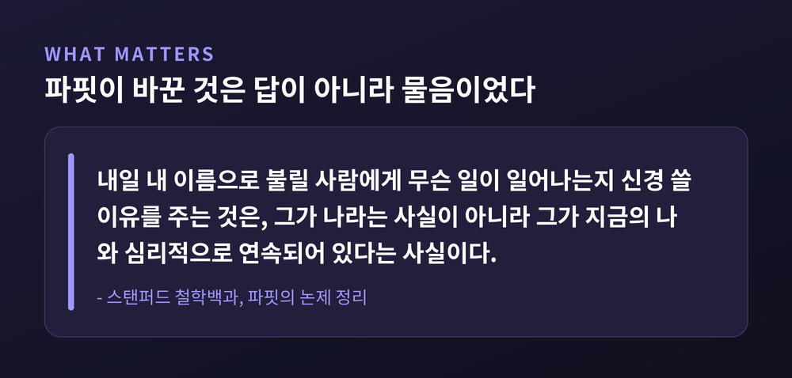

이번 글에서는 테세우스의 배 역설을 정리해 보겠습니다. 판자를 하나씩 갈아 끼운 배가 여전히 같은 배인가 하는 물음입니다. 이 물음이 왜 단순한 말장난이 아닌지, 그리고 이 문제가 어떻게 우리 자신의 인격 동일성 문제로 이어지는지 함께 짚어보려 합니다.
세 줄 요약

가장 오래된 기록은 플루타르코스의 『영웅전』 중 「테세우스의 생애」 23장 1절입니다.
테세우스와 아테네의 젊은이들이 크레타에서 타고 돌아온 배는 노가 서른 개였습니다. 아테네인들은 이 배를 데메트리오스 팔레레우스의 시대까지 보존했습니다. 기원전 4세기 후반까지, 수백 년에 걸친 보존이었습니다.
방법은 단순했습니다. 낡은 판자가 썩으면 빼내고 새 목재를 넣었습니다.
여기서 눈여겨볼 대목이 있습니다. 플루타르코스는 이 배가 "성장하는 것들에 관한 논리적 물음"에 대해 철학자들 사이에서 표준적인 사례가 되었다고 적었습니다. 그리고 곧바로 덧붙입니다. 한쪽은 배가 같은 것으로 남는다고 주장했고, 다른 쪽은 같지 않다고 맞섰다고 말입니다.
즉 플루타르코스는 이 문제를 만들어낸 사람이 아닙니다. 이미 벌어지고 있던 논쟁을 옮겨 적은 기록자였습니다. 처음부터 정답이 있는 퀴즈가 아니라 미해결 쟁점이었던 셈입니다.
배가 그토록 오래 보존된 데는 이유가 있었습니다. 테세우스가 미노타우로스를 죽이고 아이들을 구해 델로스로 향한 배였고, 아테네인들은 해마다 아폴론을 기리는 델로스 순례에 이 배를 썼습니다. 종교적 의무가 걸린 배였으니 계속 고쳐 쓸 수밖에 없었습니다.
문제를 지금의 형태로 벼려낸 사람은 토머스 홉스입니다. 1656년 『물체론』의 "동일성과 차이에 관하여" 장에서였습니다.
홉스의 물음은 이렇습니다. 빼낸 낡은 판자를 누군가 버리지 않고 모아두었다가, 원래 순서대로 다시 조립해 배를 만들었다면 어떻게 되는가.
홉스 자신의 표현을 빌리면 이렇습니다. 모든 판자가 교체된 배가 처음의 그 배와 수적으로 같은 배라면, 낡은 판자로 다시 조립한 배 역시 의심할 여지 없이 처음의 그 배일 것입니다. 그러면 수적으로 같은 배가 둘 있게 되는데, 홉스는 이를 두고 "불합리하다"고 못 박았습니다.
홉스가 내놓은 답은 이름의 문제였습니다. '배'라는 말이 '그런 모양으로 된 질료'를 뜻한다면, 질료가 같은 동안 같은 배입니다. 질료가 하나도 같지 않다면 수적으로 다른 배입니다. 일부만 남았다면 부분적으로 같고 부분적으로 같지 않은 배입니다.
형상이냐 질료냐. 홉스는 동일성의 두 정의를 나란히 세워놓은 것입니다.

여기서 흔한 오해를 하나 걷어내야 합니다. 테세우스의 배는 "당신은 어느 쪽이라고 느끼십니까" 하는 감상의 문제가 아닙니다.
스탠퍼드 철학백과는 이 사례를 두 개의 이름으로 정리합니다. 판자를 갈아 끼운 끝의 배를 '교체된 배(Replacement)', 빼낸 원래 판자들로만 만든 배를 '재조립된 배(Reassembly)'라 부릅니다.
동일성은 매우 그럴듯하게 동치관계입니다. 동치관계인 이상 이행성을 따릅니다. a가 b와 같고 b가 c와 같으면, a는 c와 같아야 합니다.
그런데 교체된 배와 재조립된 배가 둘 다 원래 배와 동일하다고 말하면 어떻게 될까요. 두 배는 지금 나란히 물 위에 떠 있고 누가 봐도 서로 다른 배입니다. 이행성이 깨집니다.
이 이행성은 임의로 정한 약속이 아닙니다. 라이프니츠 법칙, 곧 '동일자의 식별불가능성'에서 따라 나옵니다. x와 y가 동일하면 x에 참인 모든 것은 y에도 참이어야 합니다. 이행성이 깨진다면 b는 'c와 동일하다'는 속성을 갖는데 a는 갖지 않는 상황이 되어 법칙에 위배됩니다.
그래서 이 문제는 논리를 지키려면 어딘가는 반드시 포기해야 하는 구조입니다. 여기서 수적 동일성과 질적 동일성의 구분이 필요해집니다. 같은 모델의 노트북 두 대는 질적으로 동일하지만, 노트북은 여전히 두 대입니다.
한 갈래는 구성 이론입니다. 구성과 동일성은 다르며, 구성은 동치관계가 아니라 최소한 비대칭적이라는 입장입니다. 재조립된 배는 원래 배와 동일한 것이 아니라, 원래 배를 이루던 바로 그 판자들로 구성된 것일 뿐입니다. 점토 덩어리와 조각상의 관계와 같은 구조입니다. 스탠퍼드 철학백과는 배를 이루는 재료가 배와 같은 대상이 아니며 두 대상이 같은 시공간을 점유할 뿐이라는 해법을 가장 널리 받아들여지는 답으로 소개합니다.
다른 갈래는 4차원주의입니다. 데이비드 루이스의 견해가 대표적입니다. 사물이 공간적 부분을 갖듯 시간적 부분도 갖는다고 봅니다. 탁자는 자기 생애 시간 전체에 걸쳐 뻗어 있고, 짧게 존재하는 탁자들인 시간적 부분으로 이루어집니다. 가장 짧은 순간적 부분을 '단계'라 부릅니다. 이 관점을 취하면 테세우스의 배에 존재하는 것은 Y자로 갈라지는 하나의 4차원 대상이 됩니다.
세 번째는 축소론입니다. 사실관계에는 다툴 것이 없고 오직 '배'라는 낱말의 의미만 다투는 것이므로, 이 논쟁은 순전히 언어적이라는 입장입니다. 힐러리 퍼트넘은 대상과 존재라는 논리적 원초 개념조차 하나의 절대적 의미가 아니라 여러 용법을 갖는다고 했습니다. 이를 '양화사 변이'라 부릅니다.
네 번째는 인지과학 쪽의 진단입니다. 노엄 촘스키는 이 퍼즐이 극단적 외재주의에서 생긴다고 봅니다. 우리 마음속에서 참인 것이 세계에서도 참이라는 가정 말입니다. 자연과학의 관점에서 이 가정은 확고하지 않고, 인간의 직관은 자주 틀립니다. 이 진단이 맞다면 테세우스의 배는 세계에 관한 문제가 아니라 인간 마음의 작동 방식에 관한 문제입니다.

4차원주의와 3차원주의의 대립은 짚고 넘어갈 만합니다.
3차원주의는 사물이 시간적 부분 없이 매 순간 전체로서 존재한다고 봅니다. 우리의 일상 감각에 가깝습니다. 지금 이 순간 배는 통째로 여기 있습니다.
4차원주의는 다르게 봅니다. 배는 진수부터 폐선까지 시간 축을 따라 뻗은 하나의 덩어리이고, 우리가 보는 것은 그 얇은 단면입니다.
4차원주의의 실익 하나는 분명합니다. '일시적 내재 속성의 문제'가 풀립니다. 접시가 어제는 둥글고 오늘은 네모날 때, 하나의 접시가 모순된 두 속성을 갖는 것처럼 보입니다. 4차원주의는 어제만 존재하는 둥근 부분과 오늘만 존재하는 네모난 부분이 있을 뿐이라고 답합니다. 어떤 시간적 부분도 자기 모양을 바꾸지 않습니다.

다만 이 구분을 지나치게 깔끔하게 받아들이면 곤란합니다. 스탠퍼드 철학백과는 파슨스가 시간적 부분 없는 4차원주의를 전개했다고 적고 있습니다. 게다가 어떤 저자들은 '4차원주의'라는 말을 시간 속 사물의 이론이 아니라 시간 자체의 이론 이름으로 씁니다. 논쟁을 읽을 때 어느 용법인지 먼저 확인하시길 권합니다.
배 이야기가 사람 이야기로 넘어가는 지점이 여기입니다.
존 로크는 『인간지성론』 제2권 27장에서 인격의 연속성을 묶는 것이 몸도 영혼도 아니라 의식이라고 주장했습니다.
유명한 사고실험이 '왕자와 구두수선공'입니다. 왕자의 영혼이 구두수선공의 몸에 들어가 왕자다운 생각들을 모두 가져간다고 상상해 봅니다. 이때 '왕자'라 불리던 인격은 '구두수선공'이라 불리는 사람 안에서 존속합니다. 왕자의 의식이 함께 갔기 때문입니다.
로크는 곧바로 덧붙입니다. 통상적인 말하기 방식에서는 같은 인격과 같은 인간이 하나이자 같은 것을 뜻한다는 점을 자신도 안다고 말입니다. 그러면서도 그는 인격과 인간을 굳이 갈라놓습니다.
로크가 인격을 '법정적 용어'라고 규정한 대목이 이 구분의 열쇠입니다. 인격 동일성은 형이상학 이전에 도덕적 책임과 법적 귀속의 문제라는 뜻입니다. 어제 죄를 지은 자와 오늘 벌 받는 자가 같은 인격인가. 로크가 답하려던 것은 이 물음이었습니다.
로크의 답에는 유명한 반론이 붙어 있습니다. 조지프 버틀러의 반론 위에 토머스 리드가 세운 '용감한 장교' 논변입니다.
세 시점의 한 사람을 상상해 봅니다.
첫째, 소년. 학교에서 과수원을 털다가 매를 맞습니다.
둘째, 용감한 장교. 적진에서 군기를 빼앗습니다. 이때 그는 소년 시절 매 맞은 일을 기억합니다.
셋째, 노년의 장군. 군기를 빼앗던 일은 기억하지만, 매 맞은 일에 대한 의식은 완전히 잃었습니다.
장군은 장교와 같은 인격이고, 장교는 소년과 같은 인격입니다. 이행성에 의해 장군은 소년과 같은 인격이어야 합니다. 그런데 기억이 인격 동일성의 필요조건이라면, 매 맞은 일을 기억하지 못하는 장군은 소년과 같은 인격일 수 없습니다.
기억 이론은 양립할 수 없는 두 명제에 동시에 붙들립니다.
배와 똑같은 함정입니다. 이행성이 두 번 다 발목을 잡습니다.

데릭 파핏은 다른 길을 냈습니다. 1970년 이래 이 논쟁의 초점이 된 인물입니다.
그의 출발점은 구성적 환원주의입니다. 인격은 존재하지만, 존재하는 것들의 목록에 따로 적을 필요는 없습니다. 인격의 존재는 뇌와 몸의 존재, 그리고 서로 연결된 정신적·물리적 사건들의 계열이 일어나는 것 이상의 아무것도 아닙니다.
파핏은 첼리니의 『비너스』를 예로 듭니다. 청동 덩어리와 조각상은 둘 다 존재하지만 존속 조건이 다릅니다. 녹여버리면 『비너스』는 사라지고 청동은 남습니다. 그러므로 둘은 동일하지 않고, 덩어리가 조각상을 구성할 뿐입니다. 인격도 그렇다는 것입니다.
핵심은 분열 사고실험에서 드러납니다. 뇌를 반으로 나눠 두 몸에 이식하면 두 사람 모두 원래 사람과 심리적으로 연속됩니다. 이행성 때문에 어느 쪽도 원래 사람과 동일할 수 없습니다. 그러니 원래 사람은 죽습니다.
여기서 파핏은 뜻밖의 결론을 냅니다. 원래 사람에게는 두 명의 생존자가 있고, 이는 어느 한쪽과 동일한 것만큼 좋거나 오히려 더 낫다는 것입니다. 순전히 합리적 관점에서 보면, 분열에 의한 죽음보다 자신의 계속된 존재를 선호하는 것이 오히려 비합리적입니다.

파핏이 심리적 기준을 세 판본으로 나눈 대목도 유용합니다. 좁은 판본은 심리적 연속성이 정상적으로 야기될 것을 요구하고, 넓은 판본은 신뢰할 만한 원인이면 무엇이든 허용하며, 가장 넓은 판본은 어떤 원인이든 충분하다고 봅니다. 전송장치 사고실험은 여기서 갈라집니다. 전송을 신뢰할 수 없다면 가장 넓은 판본을 제외한 모든 기준이 무너집니다.
심리적 기준이 유일한 답은 아닙니다. 반론이 만만치 않습니다.
식물인간 사례가 있습니다. 사고를 당해 지속적 식물인간 상태가 된 사람을 우리는 여전히 같은 사람으로 대합니다. 태아 사례도 있습니다. 태아에게는 심리적 기준을 충족할 인지 능력이 없지만, 우리는 각자가 과거의 태아와 같은 존재라고 여깁니다.
에릭 올슨의 동물주의는 여기서 출발합니다. '사고하는 동물 논변'은 이렇습니다. 당신의 의자에 인간 동물이 앉아 있고, 그 동물은 사고하고 있으며, 그 의자에 앉아 사고하는 존재는 오직 하나입니다. 그렇다면 당신은 그 인간 동물입니다.
동물주의는 인격을 '기능적 종'으로 봅니다. 인격임은 심리적 능력을 얻을 때 시작되어 잃을 때 끝나는 국면일 뿐이며, 무엇인가의 문제가 아니라 무엇을 할 수 있는가의 문제입니다.
다만 정직하게 덧붙이겠습니다. 스탠퍼드 철학백과는 동물주의가 "몹시 인기 없는" 견해라고 명시합니다. 소수설입니다.
그리고 이 모든 대립이 남기는 결론이 하나 있습니다. 사고실험들이 서로 충돌하는 직관을 낳는 이상, 둘 이상의 기준이 동시에 참일 수 없습니다. 물리적 연속성도 심리적 연속성도 인격 동일성의 필요충분조건이 아닙니다. 이를 '인격 동일성의 역설'이라 부릅니다.
이 이야기가 사변으로만 남지 않는 이유가 있습니다.
2021년 『네이처 메디신』에 실린 센더와 밀로의 연구는 인체의 세포 교체를 정밀하게 계산했습니다. 하루에 약 3,300억 개, 초당 약 380만 개의 세포가 교체됩니다. 질량으로는 하루 80그램 안팎입니다. 교체되는 세포의 약 90퍼센트가 혈액세포이고, 장 상피세포는 개수로 12퍼센트지만 무게로는 40퍼센트를 차지하며 평균 며칠마다 갈립니다. 약 80일마다 몸 전체 세포 수와 맞먹는 수의 새 세포가 만들어집니다.
다만 흔히 도는 "몸이 7년마다 통째로 바뀐다"는 표현은 정확하지 않습니다. 소뇌의 뉴런이나 눈 수정체의 지질처럼 숙주의 수명만큼 사는 것들이 있습니다. 전면 교체가 아니라 부위별로 속도가 다른 교체입니다.
배 이야기로 돌아오면 실제 사례도 있습니다. 미 해군 목조 프리깃 USS 컨스티튜션은 1797년 진수 당시 목재가 10~20퍼센트만 남은 것으로 추정됩니다. 1905년 해군 보고서에서 찰스 조지프 보나파르트는 이 배가 헐 함장이 게리에르호를 나포했던 그 배가 아니라고 적었습니다. 반면 고전 선박 협회는 보존선의 기준을 원래 재료 60퍼센트 보유로 정해두고도, 컨스티튜션에 대해서는 원래 목재가 사실상 없지만 누구도 이 배를 복제품이라 여기지 않을 것이라고 결론지었습니다.
같은 배를 두고 두 개의 공식 판정이 정반대로 갈립니다.
일본 이세 신궁은 20년마다 전면적으로 새 목재로 재건됩니다. 그럼에도 수 세기의 연속성이 인정되는데, 그 근거는 목재를 신성한 인접 숲에서 조달한다는 데 있습니다. 물질도 형상도 아닌 제3의 기준인 셈입니다.
같은 물음이 서구 바깥에서도 독립적으로 제기되었다는 점도 흥미롭습니다. 불교 문헌 『대지도론』에는 밤길에 두 귀신을 만난 나그네 이야기가 나옵니다. 한 귀신이 나그네의 몸을 부위마다 뜯어내면 다른 귀신이 시체의 부위로 그 자리를 채웁니다. 나그네는 자신이 누구인지 알 수 없게 됩니다.
정리하면 이렇습니다.
테세우스의 배는 답을 고르는 문제가 아닙니다. 이행성이라는 논리 규칙과 우리의 직관 가운데 무엇을 지킬지 결정하는 문제입니다. 구성 이론은 배와 재료를 갈라 답했고, 4차원주의는 배를 시간까지 뻗은 덩어리로 다시 그렸습니다. 로크는 판자 대신 의식을 놓았고, 리드는 그 자리에 다시 이행성의 칼을 들이댔습니다. 파핏은 아예 물음을 바꿔, 중요한 것은 동일성이 아니라 연속성이라고 말했습니다.
어느 쪽도 논쟁을 끝내지는 못했습니다. 플루타르코스가 두 진영을 나란히 적어둔 이래로 아직 그대로입니다.
다만 한 가지는 남습니다. 우리는 매일 380만 개의 세포를 갈아 끼우면서도 어제의 약속을 오늘 지킵니다.
"같은 존재라는 말은 재료의 보고가 아니라 책임의 인수입니다."
당신은 여전히 같은 사람이냐고 물으신다면, 저는 판자를 세지 않고 어제 한 말을 지키는 쪽을 택하겠습니다.